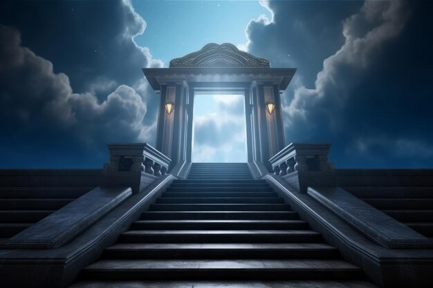

El Valhalla (en nórdico antiguo Valhǫll, "salón de los caídos") es un majestuoso palacio ubicado en Asgard, el reino de los dioses Æsir. Es gobernado por Odín, el padre de todos, y es el destino final de aquellos guerreros que han demostrado un valor excepcional en la batalla.
Los guerreros que llegan al Valhalla son conocidos como Einherjar. Son seleccionados por las valquirias, doncellas divinas enviadas por Odín para recoger a los más valientes en el campo de batalla.
El Valhalla no es solo un lugar de honor para los caídos; tiene un propósito mayor: Los Einherjar no disfrutan de su descanso eterno sin motivo. Son preparados para luchar en el Ragnarök, la batalla final del fin del mundo. En este enfrentamiento, los Einherjar lucharán junto a Odín contra las fuerzas del caos, lideradas por Loki y los gigantes de hielo.
No todos los guerreros caídos van al Valhalla. La diosa Freya elige la mitad de los muertos en batalla y los lleva a su propio dominio, Fólkvangr, otro paraíso de la mitología nórdica.
© 2025 Mitología Nórdica | Todos los derechos reservados